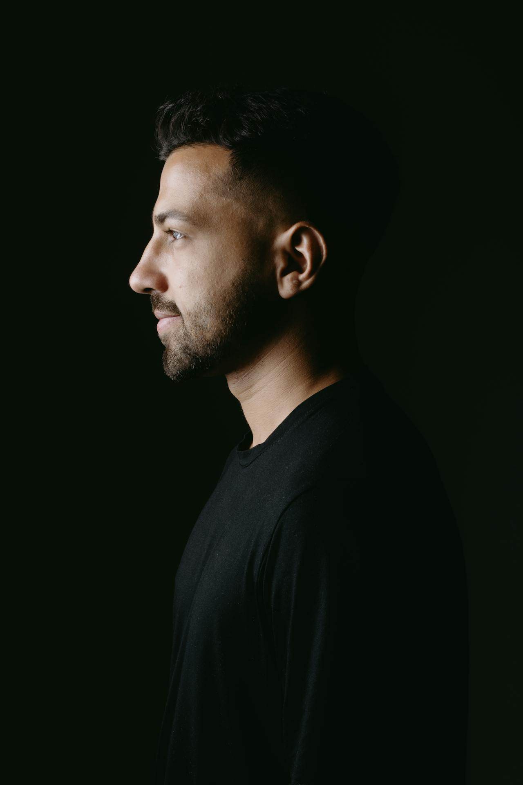

I'm Soren Weil – a designer who believes the best work lives at the intersection of clarity and craft. I specialize in product experiences that feel considered from every angle, the layout, the type, the small details most people scroll past without noticing.
Consistency matters just as much as delight. Having spent over 8 years partnering with startups and scale-ups, I bridge strategic systems thinking with obsessive attention to craft.
Incase
Grey
Shopify
Shrink
"Soren has this rare ability to hold the big picture and the smallest detail at the same time. He pushes every project to a level you didn't know was possible – and makes the process feel effortless."
Fenwick Studio
"Working with Soren changed how I think about creative direction. He doesn't just design – he asks the right questions until the work means something. That clarity is hard to find."
Dayloom
"Soren is one of those creatives who makes everyone around him better. His taste is impeccable, his feedback is generous, and his commitment to the work never wavers."
Haulk